Maria del Rio-Chanona
I am an Assistant Professor at University College London’s Computer Science department and a Research Scientist at Google DeepMind. I was JSMF Fellow at the Complexity Science Hub, and a visiting fellow at the Growth Lab at the Harvard Kennedy School. I did my PhD in Mathematics at the Institute for New Economic Thinking at the Oxford Martin School, University of Oxford.
My research draws from Machine Learning (ML), Large Language Models (LLMs), Networks, and Agent-Based Modelling (ABMs) to study the economic impacts of the net-zero transition, the Covid-19 pandemic, and (Gen)AI.
m [dot] delriochanona [at] ucl.ac.uk
Research highlights
LLM / AI agent behaviour
Machine Spirits: LLM Agents in Asset Markets
LLM agents are better human surrogates than rational-expectations models in simulated asset markets — and AI agents in real markets may increase, not reduce, volatility. Read the paper →
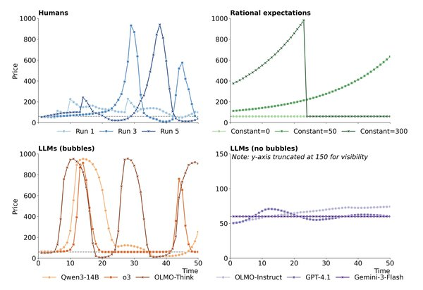
LLM Agents in Financial Markets
LLM-based agents mimic human trading behaviour in laboratory market experiments, forming bubbles but with less diversity in their forecasts. Read the paper →
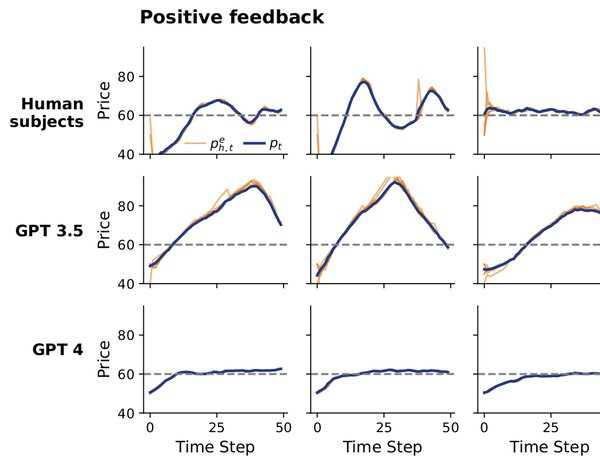
Misinformation Resharing in VLMs
Vision-language models reshare false news more readily when it includes an image, and personality traits shape this further. Read the paper →
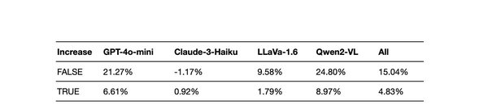
Self-Building Benchmarks
LLMs auto-generate and grade their own work-capability exams across occupations; even top models score only 65-79%, though performance jumped 26 points from 2024 to 2025. Read the paper →
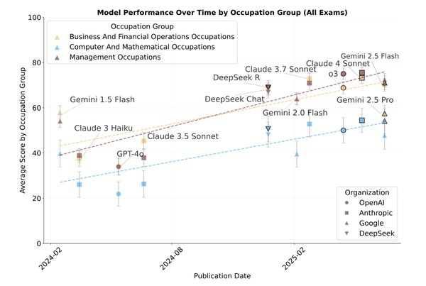
Seshat Global History Benchmark
A 36,000-question benchmark testing how well LLMs understand 600+ historical societies from the Seshat Databank. Read the paper →
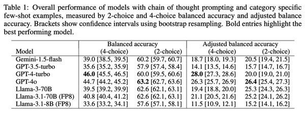
Impact of AI on jobs and public data
AI and Jobs: A Review
A review of theory, exposure measures, and evidence on generative AI's labour-market effects — productivity gains are sizable but context-dependent, concentrated in high-wage occupations. Read the paper →
ChatGPT and Demand for Freelancer Skills
ChatGPT's release sharply cut demand for substitutable freelance skills like writing and translation, while some complementary skills grew. Read the paper →
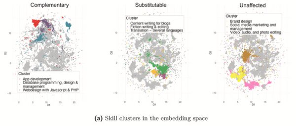
A Network Model of the Labour Market
A data-driven network model shows how the structure of job-to-job mobility shapes which occupations bear the brunt of automation-driven unemployment. Read the paper →
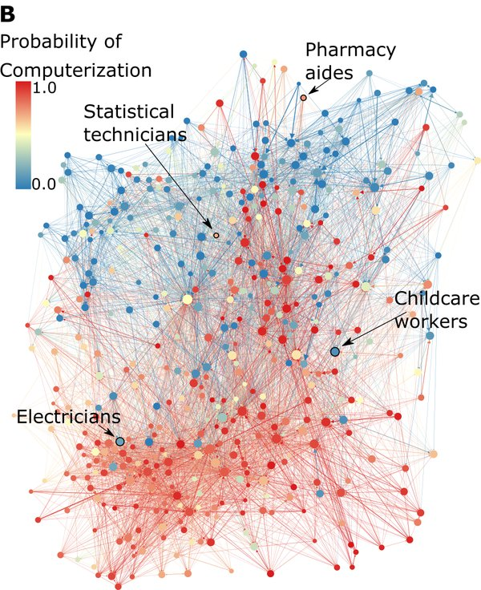
LLMs and Digital Public Goods
ChatGPT's release coincided with a sharp, sustained drop in Stack Overflow activity, raising concerns about the future of open knowledge sharing. Read the paper →
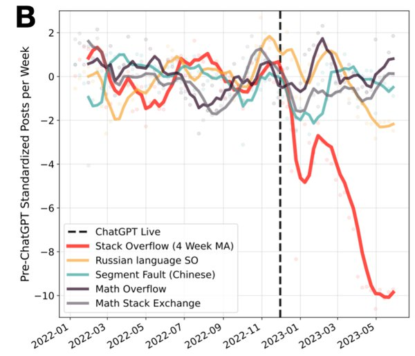
Complexity Economics and Climate Transition
The Economy as an Evolving Complex System IV
An edited volume applying complexity economics — adaptive systems, agent-based models, and networks — to labour markets, climate transition, inequality, and technological change. Read the paper →
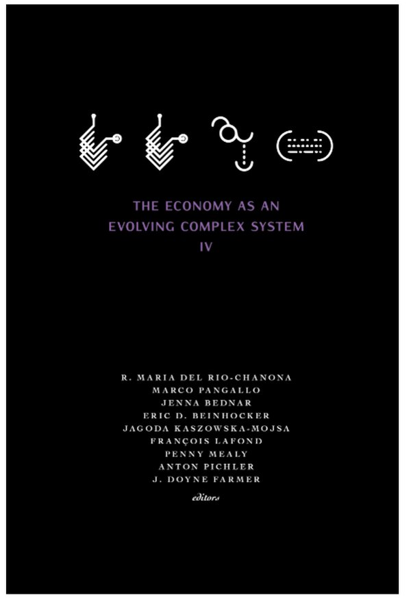
Data-Driven Economic Agent-Based Models
A framework for classifying data-driven agent-based models by whether agent-level quantities come from real micro-data and whether model dynamics match empirical time series. Read the paper →
Beyond Efficiency: Labor-Market Resilience in an Age of AI and Net Zero
Labour markets need to be studied for resilience, not just efficiency, during technological disruption — combining network analysis, agent-based modelling, and machine learning with occupational data. Read the paper →
Skill Mismatch and Development in Brazil
A labour market model of occupational and regional mobility shows Brazilian workers in agriculture-heavy transition scenarios face the largest, least mobile job losses. Read the paper →
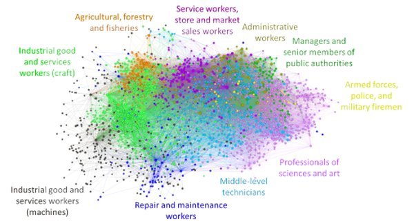
US Employment Under Rapid Decarbonisation
Modelling a 95%-by-2035 decarbonisation of the US electricity sector reveals distinct scale-up, scale-down, and steady-state phases in the job market. Read the paper →
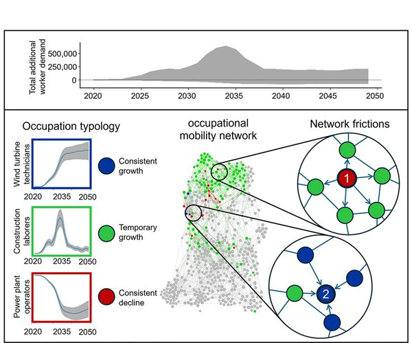
Machine Spirits: LLM Agents in Asset Markets
LLM agents are better human surrogates than rational-expectations models in simulated asset markets — and AI agents in real markets may increase, not reduce, volatility. Read the paper →
LLM Agents in Financial Markets
LLM-based agents mimic human trading behaviour in laboratory market experiments, forming bubbles but with less diversity in their forecasts. Read the paper →
Misinformation Resharing in VLMs
Vision-language models reshare false news more readily when it includes an image, and personality traits shape this further. Read the paper →
Self-Building Benchmarks
LLMs auto-generate and grade their own work-capability exams across occupations; even top models score only 65-79%, though performance jumped 26 points from 2024 to 2025. Read the paper →
Seshat Global History Benchmark
A 36,000-question benchmark testing how well LLMs understand 600+ historical societies from the Seshat Databank. Read the paper →
AI and Jobs: A Review
A review of theory, exposure measures, and evidence on generative AI's labour-market effects — productivity gains are sizable but context-dependent, concentrated in high-wage occupations. Read the paper →
ChatGPT and Demand for Freelancer Skills
ChatGPT's release sharply cut demand for substitutable freelance skills like writing and translation, while some complementary skills grew. Read the paper →
A Network Model of the Labour Market
A data-driven network model shows how the structure of job-to-job mobility shapes which occupations bear the brunt of automation-driven unemployment. Read the paper →
LLMs and Digital Public Goods
ChatGPT's release coincided with a sharp, sustained drop in Stack Overflow activity, raising concerns about the future of open knowledge sharing. Read the paper →
The Economy as an Evolving Complex System IV
An edited volume applying complexity economics — adaptive systems, agent-based models, and networks — to labour markets, climate transition, inequality, and technological change. Read the paper →
Data-Driven Economic Agent-Based Models
A framework for classifying data-driven agent-based models by whether agent-level quantities come from real micro-data and whether model dynamics match empirical time series. Read the paper →
Beyond Efficiency: Labor-Market Resilience in an Age of AI and Net Zero
Labour markets need to be studied for resilience, not just efficiency, during technological disruption — combining network analysis, agent-based modelling, and machine learning with occupational data. Read the paper →
Skill Mismatch and Development in Brazil
A labour market model of occupational and regional mobility shows Brazilian workers in agriculture-heavy transition scenarios face the largest, least mobile job losses. Read the paper →
US Employment Under Rapid Decarbonisation
Modelling a 95%-by-2035 decarbonisation of the US electricity sector reveals distinct scale-up, scale-down, and steady-state phases in the job market. Read the paper →
Other research
COVID-19 Economic Impact
A series of agent-based and input-output models quantified the sectoral, industry, and health-economy trade-offs of the COVID-19 shock in the US, UK, and NYC. Read the paper (shocks) → Read the paper (model) → Read the paper (health econ) →
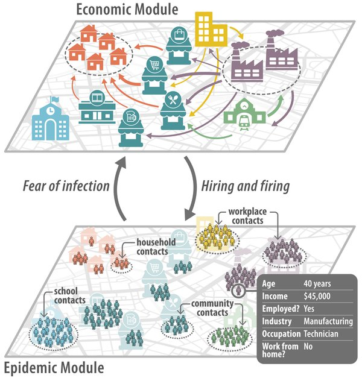
Multilayer Networks and Financial Contagion
A multilayer network approach reveals how interconnected equity, debt, and banking exposures propagate financial contagion across countries. Read the paper →
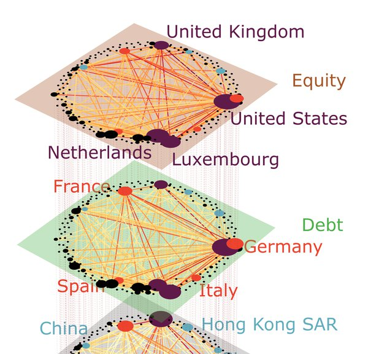
The Great Resignation
Text analysis of Reddit posts links the Great Resignation to a pandemic-era surge in mental health and work-related distress discourse. Read the paper →
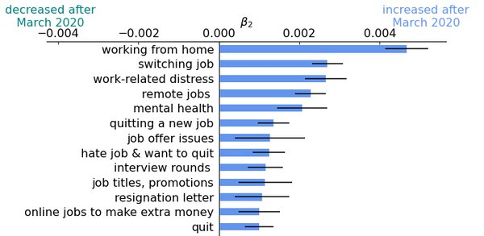